UMI-based analysis
x, y, ym, yf)
x: voomLmFit() of individual technical replicates, blocking on mousey: voomLmFit() of aggregated technical repsym: As with y but males onlyyf: As with y but females onlylibrary(SingleCellExperiment)
library(here)
library(edgeR)
library(ggplot2)
library(cowplot)
library(patchwork)
library(ggrepel)
source(here("code/helper_functions.R"))
sce <- readRDS(
here("data", "SCEs", "C086_Kinkel.preprocessed.SCE.rds"))
# Some useful colours
sex_colours <- setNames(
unique(sce$sex_colours),
unique(names(sce$sex_colours)))
smchd1_genotype_updated_colours <- setNames(
unique(sce$smchd1_genotype_updated_colours),
unique(names(sce$smchd1_genotype_updated_colours)))
mouse_number_colours <- setNames(
unique(sce$mouse_number_colours),
unique(names(sce$mouse_number_colours)))
y <- sumTechReps(x, x$samples$genotype.mouse)
ym <- y[, y$samples$sex == "M"]
yf <- y[, y$samples$sex == "F"]
x_keep_exprs <- filterByExpr(x, group = x$samples$group)
table(x_keep_exprs)
x_keep_exprs
FALSE TRUE
17481 8105 x <- x[x_keep_exprs, , keep.lib.sizes = FALSE]
y_keep_exprs <- filterByExpr(y, group = ym$samples$group)
table(y_keep_exprs)
y_keep_exprs
FALSE TRUE
12971 12615 y <- y[y_keep_exprs, , keep.lib.sizes = FALSE]
ym_keep_exprs <- filterByExpr(ym, group = ym$samples$group)
table(ym_keep_exprs)
ym_keep_exprs
FALSE TRUE
14016 11570 ym <- ym[ym_keep_exprs, , keep.lib.sizes = FALSE]
yf_keep_exprs <- filterByExpr(yf, group = yf$samples$group)
table(yf_keep_exprs)
yf_keep_exprs
FALSE TRUE
14726 10860 yf <- yf[yf_keep_exprs, , keep.lib.sizes = FALSE]
x <- calcNormFactors(x, method = "TMM")
y <- calcNormFactors(y, method = "TMM")
ym <- calcNormFactors(ym, method = "TMM")
yf <- calcNormFactors(yf, method = "TMM")
x_mds <- plotMDS(x, plot = FALSE)
x_df <- cbind(data.frame(x = x_mds$x, y = x_mds$y), x$samples)
rownames(x_df) <- colnames(x)
p1 <- ggplot(
aes(x = x, y = y, colour = smchd1_genotype_updated, label = rownames(x_df)),
data = x_df) +
geom_point() +
geom_text_repel(size = 4) +
theme_cowplot(font_size = 8) +
xlab("Leading logFC dim 1") +
ylab("Leading logFC dim 2") +
scale_colour_manual(values = smchd1_genotype_updated_colours)
p2 <- ggplot(
aes(x = x, y = y, colour = sex, label = rownames(x_df)),
data = x_df) +
geom_point() +
geom_text_repel(size = 4) +
theme_cowplot(font_size = 8) +
xlab("Leading logFC dim 1") +
ylab("Leading logFC dim 2") +
scale_colour_manual(values = sex_colours)
p3 <- ggplot(
aes(x = x, y = y, colour = mouse_number, label = rownames(x_df)),
data = x_df) +
geom_point() +
geom_text_repel(size = 4) +
theme_cowplot(font_size = 8) +
xlab("Leading logFC dim 1") +
ylab("Leading logFC dim 2") +
scale_colour_manual(values = mouse_number_colours)
p4 <- ggplot(
aes(x = x, y = y, colour = log10(lib.size), label = rownames(x_df)),
data = x_df) +
geom_point() +
geom_text_repel(size = 4) +
theme_cowplot(font_size = 8) +
scale_colour_viridis_c() +
xlab("Leading logFC dim 1") +
ylab("Leading logFC dim 2")
p5 <- ggplot(
aes(x = log10(lib.size), y = x, colour = log10(lib.size), label = rownames(x_df)),
data = x_df) +
geom_point() +
geom_text_repel(size = 4) +
theme_cowplot(font_size = 8) +
scale_colour_viridis_c() +
ylab("Leading logFC dim 1")
p6 <- ggplot(
aes(x = log10(lib.size), y = y, colour = log10(lib.size), label = rownames(x_df)),
data = x_df) +
geom_point() +
geom_text_repel(size = 4) +
theme_cowplot(font_size = 8) +
scale_colour_viridis_c() +
ylab("Leading logFC dim 2")
p1 + p2 + p3 + p4 + p5 + p6 + plot_layout(ncol = 2)
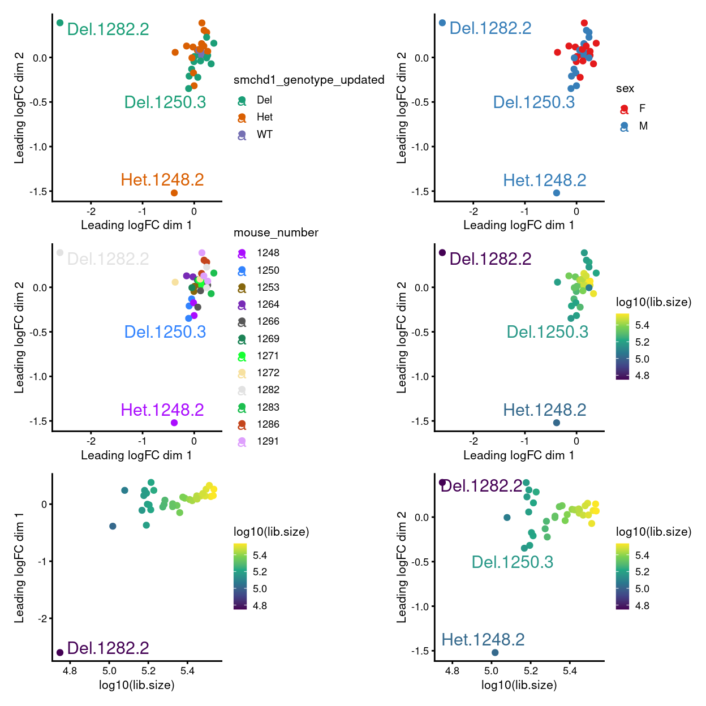
outliers <- c("Del.1282.2", "Het.1248.2")
x2 <- x[, setdiff(colnames(x), outliers)]
x2_mds <- plotMDS(x2, plot = FALSE)
x2_df <- cbind(data.frame(x = x2_mds$x, y = x2_mds$y), x2$samples)
rownames(x2_df) <- colnames(x2)
p1 <- ggplot(
aes(x = x, y = y, colour = smchd1_genotype_updated, label = rownames(x2_df)),
data = x2_df) +
geom_point() +
geom_text_repel(size = 4) +
theme_cowplot(font_size = 8) +
xlab("Leading logFC dim 1") +
ylab("Leading logFC dim 2") +
scale_colour_manual(values = smchd1_genotype_updated_colours)
p2 <- ggplot(
aes(x = x, y = y, colour = sex, label = rownames(x2_df)),
data = x2_df) +
geom_point() +
geom_text_repel(size = 4) +
theme_cowplot(font_size = 8) +
xlab("Leading logFC dim 1") +
ylab("Leading logFC dim 2") +
scale_colour_manual(values = sex_colours)
p3 <- ggplot(
aes(x = x, y = y, colour = mouse_number, label = rownames(x2_df)),
data = x2_df) +
geom_point() +
geom_text_repel(size = 4) +
theme_cowplot(font_size = 8) +
xlab("Leading logFC dim 1") +
ylab("Leading logFC dim 2") +
scale_colour_manual(values = mouse_number_colours)
p4 <- ggplot(
aes(x = x, y = y, colour = log10(lib.size), label = rownames(x2_df)),
data = x2_df) +
geom_point() +
geom_text_repel(size = 4) +
theme_cowplot(font_size = 8) +
scale_colour_viridis_c() +
xlab("Leading logFC dim 1") +
ylab("Leading logFC dim 2")
p5 <- ggplot(
aes(x = log10(lib.size), y = x, colour = log10(lib.size), label = rownames(x2_df)),
data = x2_df) +
geom_point() +
geom_text_repel(size = 4) +
theme_cowplot(font_size = 8) +
scale_colour_viridis_c() +
ylab("Leading logFC dim 1")
p6 <- ggplot(
aes(x = log10(lib.size), y = y, colour = log10(lib.size), label = rownames(x2_df)),
data = x2_df) +
geom_point() +
geom_text_repel(size = 4) +
theme_cowplot(font_size = 8) +
scale_colour_viridis_c() +
ylab("Leading logFC dim 2")
p1 + p2 + p3 + p4 + p5 + p6 + plot_layout(ncol = 2)
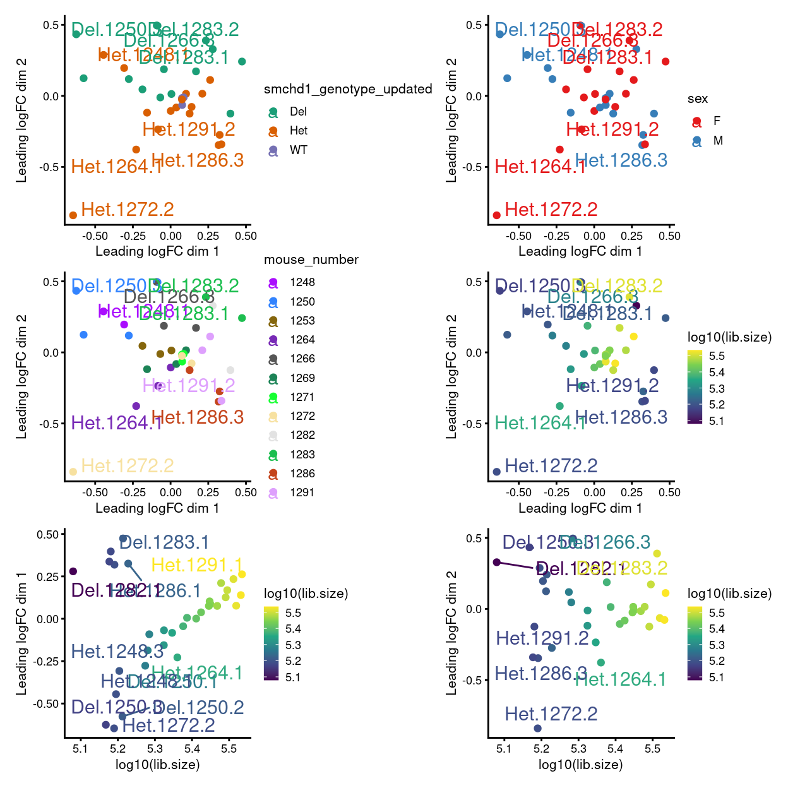
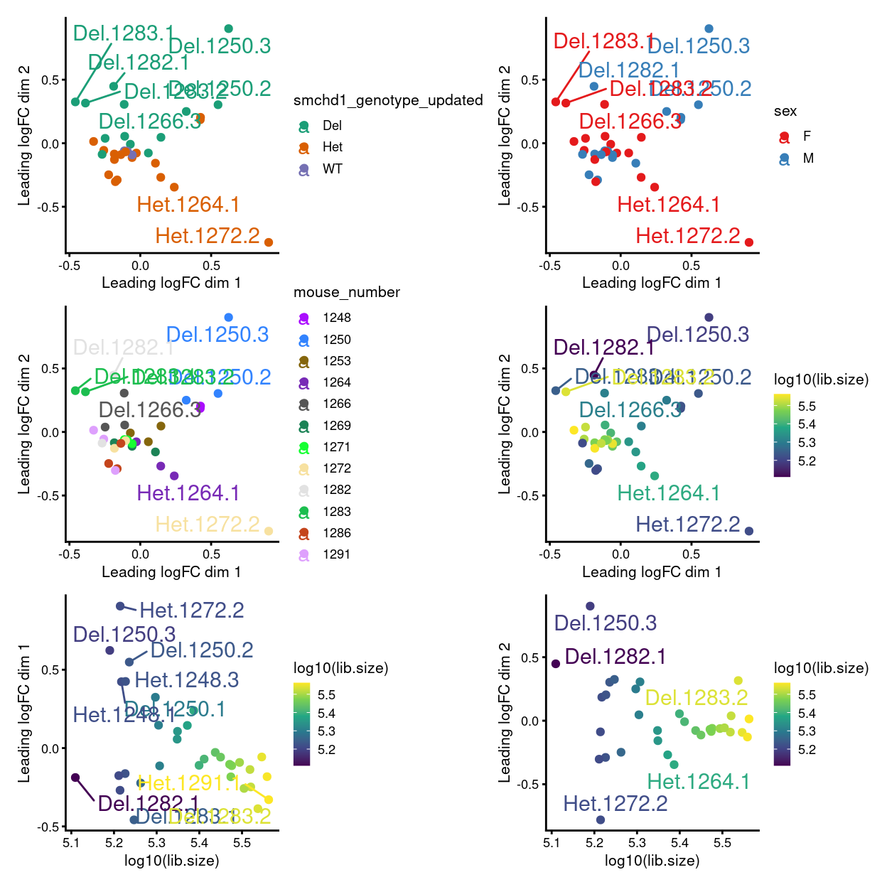
x_fit$cor = 0.0638158)?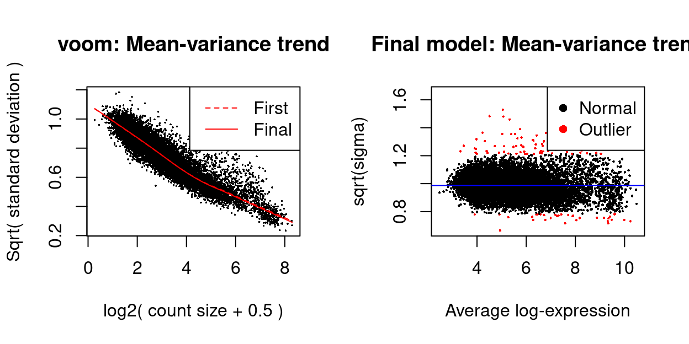
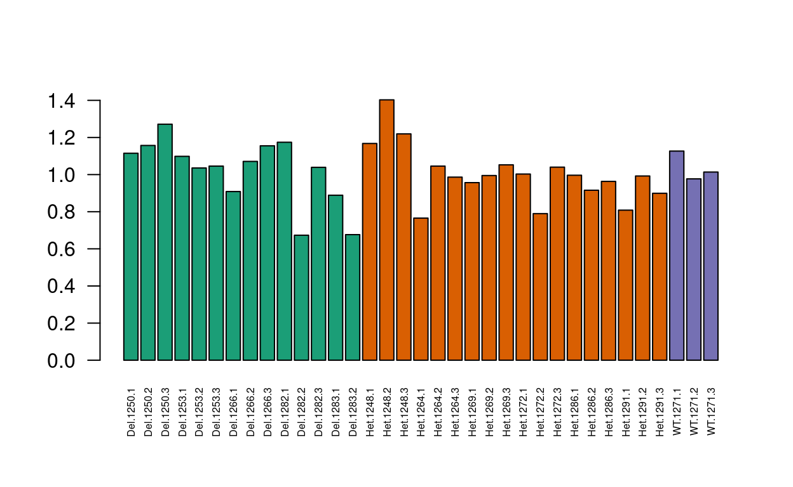
topTable(x_fit)
ENSEMBL.GENEBIOTYPE ENSEMBL.GENENAME
Smchd1 protein_coding Smchd1
Itsn1 protein_coding Itsn1
Mxd4 protein_coding Mxd4
Tomm5 protein_coding Tomm5
C130026I21Rik protein_coding C130026I21Rik
Plac8 protein_coding Plac8
Sugp2 protein_coding Sugp2
Cep350 protein_coding Cep350
Mid1 protein_coding Mid1
Ubfd1 protein_coding Ubfd1
ENSEMBL.GENESEQSTART ENSEMBL.GENESEQEND ENSEMBL.SEQNAME
Smchd1 71344489 71475343 17
Itsn1 91729281 91920597 16
Mxd4 34173887 34187720 5
Tomm5 45105208 45108114 4
C130026I21Rik 84992690 85270566 1
Plac8 100553725 100572245 5
Sugp2 70234226 70279915 8
Cep350 155844964 155973255 1
Mid1 169685199 170005736 X
Ubfd1 122067175 122082194 7
ENSEMBL.SYMBOL ENSEMBL.GENEID
Smchd1 Smchd1 ENSMUSG00000024054.14
Itsn1 Itsn1 ENSMUSG00000022957.20
Mxd4 Mxd4 ENSMUSG00000037235.13
Tomm5 Tomm5 ENSMUSG00000078713.8
C130026I21Rik C130026I21Rik ENSMUSG00000052477.15
Plac8 Plac8 ENSMUSG00000029322.12
Sugp2 Sugp2 ENSMUSG00000036054.15
Cep350 Cep350 ENSMUSG00000033671.18
Mid1 Mid1 ENSMUSG00000035299.16
Ubfd1 Ubfd1 ENSMUSG00000030870.12
NCBI.ALIAS
Smchd1 4931400A14Rik; AW554188; MommeD; MommeD1; mKIAA0650; Smchd1
Itsn1 AA517634; AA545208; AI316805; AI839402; AI848451; EHSH; Ehsh1; Ese; Ese1; Itsn; Sh3p; Sh3p17; Itsn1
Mxd4 2810410A03Rik; Mad; Mad4; bHLHc1; bHLHc12; Mxd4
Tomm5 1110019J04Rik; Tom5; Tomm5
C130026I21Rik 4930565N07Rik; C130026I21Rik
Plac8 C15; D5Wsu111; D5Wsu111e; o; Plac8
Sugp2 Sfr; Sfrs14; Srs; Srsf14; mKIAA0365; Sugp2
Cep350 4933409L06Rik; 6430546F08Rik; Cep350
Mid1 61B3-; 61B3-R; DXHXS114; DXHXS1141; Fxy; Trim; Trim18; Mid1
Ubfd1 AI467302; D7Wsu105; D7Wsu105e; D7Wsu128; D7Wsu128e; Ubph; Ubfd1
NCBI.ENTREZID
Smchd1 74355
Itsn1 16443
Mxd4 17122
Tomm5 68512
C130026I21Rik 620078
Plac8 231507
Sugp2 234373
Cep350 74081
Mid1 17318
Ubfd1 28018
NCBI.GENENAME
Smchd1 SMC hinge domain containing 1
Itsn1 intersectin 1 (SH3 domain protein 1A)
Mxd4 Max dimerization protein 4
Tomm5 translocase of outer mitochondrial membrane 5
C130026I21Rik RIKEN cDNA C130026I21 gene
Plac8 placenta-specific 8
Sugp2 SURP and G patch domain containing 2
Cep350 centrosomal protein 350
Mid1 midline 1
Ubfd1 ubiquitin family domain containing 1
NCBI.REFSEQ
Smchd1 NM_028887; NP_083163; XM_030250119; XP_030105979
Itsn1 NM_001110275; NM_001110276; NM_010587; NP_001103745; NP_001103746; NP_034717; XM_006522931; XM_006522932; XM_006522933; XM_006522934; XM_006522935; XM_006522936; XM_006522937; XM_006522938; XM_006522939; XM_006522940; XM_011246102; XP_006522994; XP_006522995; XP_006522996; XP_006522997; XP_006522998; XP_006522999; XP_006523000; XP_006523001; XP_006523002; XP_006523003; XP_011244404; XR_001781793
Mxd4 NM_010753; NP_034883
Tomm5 NM_001099675; NM_001134646; NP_001093145; NP_001128118
C130026I21Rik NM_001037909; NM_175219; NP_001032998; NP_780428; XM_006496512; XM_006496519; XM_017321879; XM_017321880; XM_017321881; XM_017321882; XM_017321884; XM_017321885; XM_030255713; XM_030255714; XM_030255715; XM_030255716; XP_006496575; XP_006496582; XP_017177368; XP_017177369; XP_017177370; XP_017177371; XP_017177373; XP_017177374; XP_030111573; XP_030111574; XP_030111575; XP_030111576
Plac8 NM_001370754; NM_139198; NP_001357683; NP_631937; XM_017320849; XM_017320850; XM_030254402; XM_030254403; XM_030254404; XP_017176338; XP_017176339; XP_030110262; XP_030110263; XP_030110264
Sugp2 NM_001168290; NM_172755; NP_001161762; NP_766343; NR_165051; NR_165052; XM_006509644; XM_006509645; XM_006509647; XM_006509648; XM_006509650; XM_011242297; XM_030243480; XP_006509707; XP_006509708; XP_006509710; XP_006509711; XP_006509713; XP_011240599; XP_030099340
Cep350 NM_001039184; NP_001034273; XM_006529900; XM_006529902; XM_006529903; XM_006529904; XM_006529905; XM_006529906; XM_006529907; XM_030243199; XM_030243200; XP_006529963; XP_006529965; XP_006529966; XP_006529967; XP_006529968; XP_006529969; XP_006529970; XP_030099059; XP_030099060
Mid1 NM_001290504; NM_001290505; NM_001290506; NM_001290512; NM_010797; NM_183151; NP_001277433; NP_001277434; NP_001277435; NP_001277441; NP_034927; XM_006528736; XM_006528737; XM_006528739; XM_011247789; XM_017318408; XM_017318409; XM_017318410; XM_017318411; XM_017318412; XM_017318413; XM_030251241; XM_030251242; XM_030251243; XM_030251244; XP_006528799; XP_006528800; XP_006528802; XP_011246091; XP_017173897; XP_017173898; XP_017173899; XP_017173900; XP_017173901; XP_017173902; XP_030107101; XP_030107102; XP_030107103; XP_030107104; XR_878259
Ubfd1 NM_138589; NP_613055; XM_006507913; XM_006507914; XM_006507915; XP_006507976; XP_006507977; XP_006507978
NCBI.SYMBOL logFC AveExpr t
Smchd1 Smchd1 -0.7337803 6.372870 -4.735030
Itsn1 Itsn1 -0.4519227 7.234326 -4.136542
Mxd4 Mxd4 -0.5342023 6.447034 -4.118836
Tomm5 Tomm5 0.5397867 6.112978 4.138645
C130026I21Rik C130026I21Rik 1.4856437 4.333562 4.801627
Plac8 Plac8 0.7010089 5.374301 4.048282
Sugp2 Sugp2 -0.5418933 6.511801 -3.927633
Cep350 Cep350 -0.5274760 6.166499 -3.848508
Mid1 Mid1 0.7736309 5.854082 3.753486
Ubfd1 Ubfd1 -0.4938718 6.124720 -3.660584
P.Value adj.P.Val B
Smchd1 1.150308e-05 0.04661622 2.63794840
Itsn1 9.898198e-05 0.17062789 1.15854199
Mxd4 1.052609e-04 0.17062789 0.98521752
Tomm5 9.826057e-05 0.17062789 0.96176189
C130026I21Rik 8.980444e-06 0.04661622 0.55833966
Plac8 1.343137e-04 0.18143542 0.46103841
Sugp2 2.027289e-04 0.23473109 0.44783866
Cep350 2.646100e-04 0.26808303 0.13331035
Mid1 3.629510e-04 0.32685753 -0.03043161
Ubfd1 4.922528e-04 0.38205876 -0.39218219topTable(x_fit, n = Inf)["Smchd1", ]
ENSEMBL.GENEBIOTYPE ENSEMBL.GENENAME ENSEMBL.GENESEQSTART
Smchd1 protein_coding Smchd1 71344489
ENSEMBL.GENESEQEND ENSEMBL.SEQNAME ENSEMBL.SYMBOL
Smchd1 71475343 17 Smchd1
ENSEMBL.GENEID
Smchd1 ENSMUSG00000024054.14
NCBI.ALIAS
Smchd1 4931400A14Rik; AW554188; MommeD; MommeD1; mKIAA0650; Smchd1
NCBI.ENTREZID NCBI.GENENAME
Smchd1 74355 SMC hinge domain containing 1
NCBI.REFSEQ NCBI.SYMBOL
Smchd1 NM_028887; NP_083163; XM_030250119; XP_030105979 Smchd1
logFC AveExpr t P.Value adj.P.Val B
Smchd1 -0.7337803 6.37287 -4.73503 1.150308e-05 0.04661622 2.637948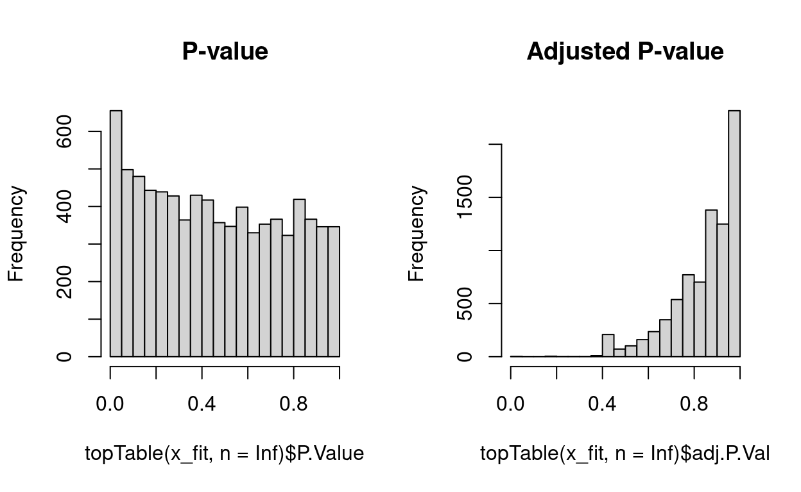
y_mds <- plotMDS(y, plot = FALSE)
y_df <- cbind(data.frame(x = y_mds$x, y = y_mds$y), y$samples)
rownames(y_df) <- colnames(y)
p1 <- ggplot(
aes(x = x, y = y, colour = smchd1_genotype_updated, label = rownames(y_df)),
data = y_df) +
geom_point() +
geom_text_repel(size = 4) +
theme_cowplot(font_size = 8) +
xlab("Leading logFC dim 1") +
ylab("Leading logFC dim 2") +
scale_colour_manual(values = smchd1_genotype_updated_colours)
p2 <- ggplot(
aes(x = x, y = y, colour = sex, label = rownames(y_df)),
data = y_df) +
geom_point() +
geom_text_repel(size = 4) +
theme_cowplot(font_size = 8) +
xlab("Leading logFC dim 1") +
ylab("Leading logFC dim 2") +
scale_colour_manual(values = sex_colours)
p3 <- ggplot(
aes(x = x, y = y, colour = mouse_number, label = rownames(y_df)),
data = y_df) +
geom_point() +
geom_text_repel(size = 4) +
theme_cowplot(font_size = 8) +
xlab("Leading logFC dim 1") +
ylab("Leading logFC dim 2") +
scale_colour_manual(values = mouse_number_colours)
p4 <- ggplot(
aes(x = x, y = y, colour = log10(lib.size), label = rownames(y_df)),
data = y_df) +
geom_point() +
geom_text_repel(size = 4) +
theme_cowplot(font_size = 8) +
scale_colour_viridis_c() +
xlab("Leading logFC dim 1") +
ylab("Leading logFC dim 2")
p5 <- ggplot(
aes(x = log10(lib.size), y = x, colour = log10(lib.size), label = rownames(y_df)),
data = y_df) +
geom_point() +
geom_text_repel(size = 4) +
theme_cowplot(font_size = 8) +
scale_colour_viridis_c() +
ylab("Leading logFC dim 1")
p6 <- ggplot(
aes(x = log10(lib.size), y = y, colour = log10(lib.size), label = rownames(y_df)),
data = y_df) +
geom_point() +
geom_text_repel(size = 4) +
theme_cowplot(font_size = 8) +
scale_colour_viridis_c() +
ylab("Leading logFC dim 2")
p1 + p2 + p3 + p4 + p5 + p6 + plot_layout(ncol = 2)
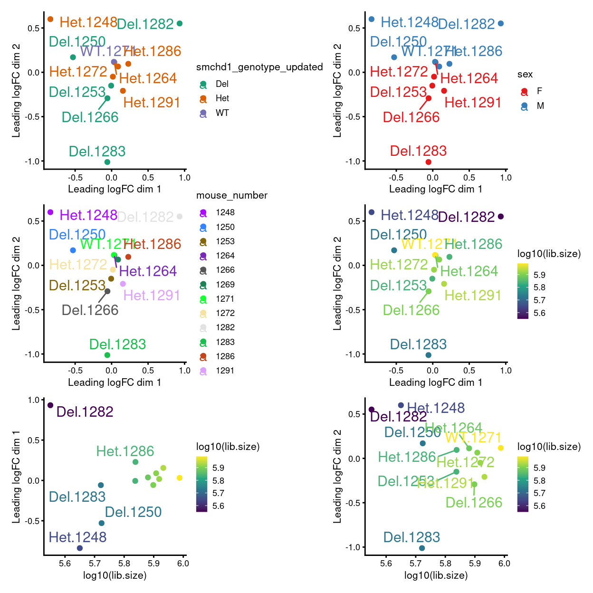
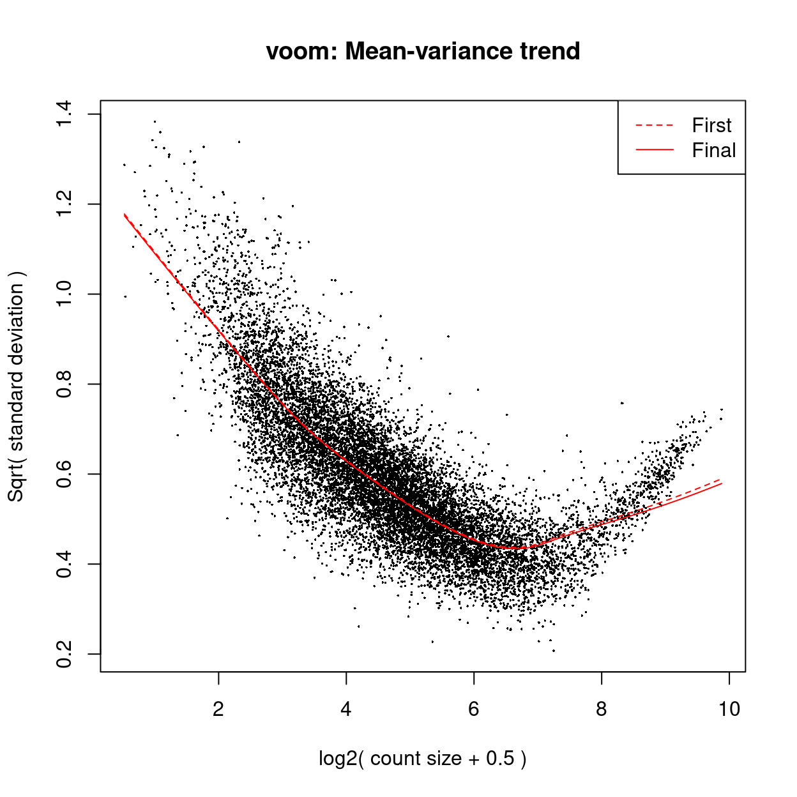
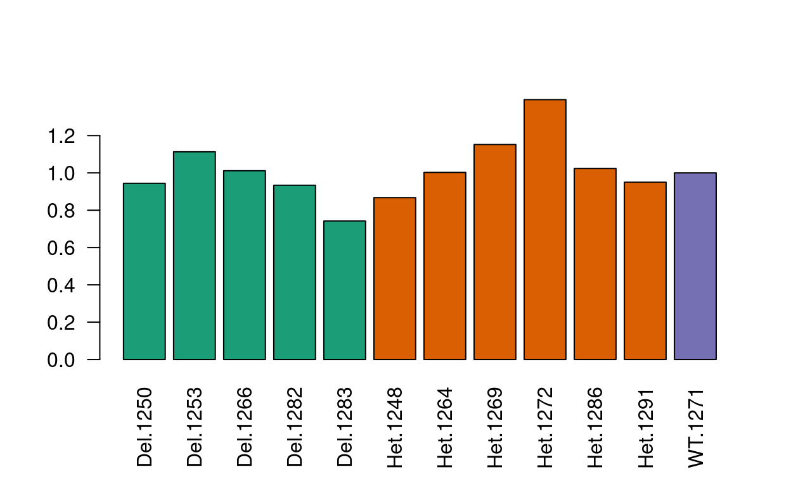
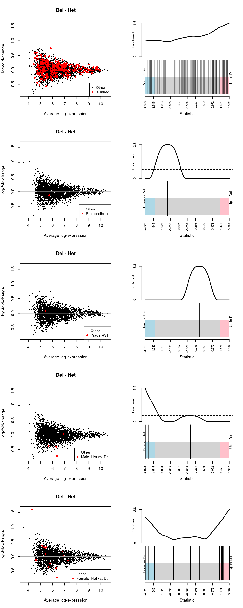
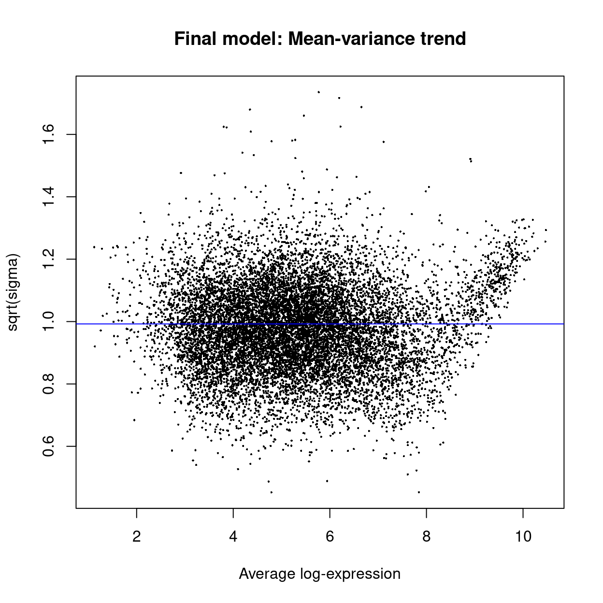
topTable(y_fit)
ENSEMBL.GENEBIOTYPE ENSEMBL.GENENAME
Smchd1 protein_coding Smchd1
C130026I21Rik protein_coding C130026I21Rik
Pbxip1 protein_coding Pbxip1
Mxd4 protein_coding Mxd4
Tomm5 protein_coding Tomm5
Sugp2 protein_coding Sugp2
Plac8 protein_coding Plac8
Tmed7 protein_coding Tmed7
Utp3 protein_coding Utp3
Itsn1 protein_coding Itsn1
ENSEMBL.GENESEQSTART ENSEMBL.GENESEQEND ENSEMBL.SEQNAME
Smchd1 71344489 71475343 17
C130026I21Rik 84992690 85270566 1
Pbxip1 89436706 89450952 3
Mxd4 34173887 34187720 5
Tomm5 45105208 45108114 4
Sugp2 70234226 70279915 8
Plac8 100553725 100572245 5
Tmed7 46560235 46597535 18
Utp3 88554483 88556083 5
Itsn1 91729281 91920597 16
ENSEMBL.SYMBOL ENSEMBL.GENEID
Smchd1 Smchd1 ENSMUSG00000024054.14
C130026I21Rik C130026I21Rik ENSMUSG00000052477.15
Pbxip1 Pbxip1 ENSMUSG00000042613.9
Mxd4 Mxd4 ENSMUSG00000037235.13
Tomm5 Tomm5 ENSMUSG00000078713.8
Sugp2 Sugp2 ENSMUSG00000036054.15
Plac8 Plac8 ENSMUSG00000029322.12
Tmed7 Tmed7 ENSMUSG00000033184.14
Utp3 Utp3 ENSMUSG00000070697.4
Itsn1 Itsn1 ENSMUSG00000022957.20
NCBI.ALIAS
Smchd1 4931400A14Rik; AW554188; MommeD; MommeD1; mKIAA0650; Smchd1
C130026I21Rik 4930565N07Rik; C130026I21Rik
Pbxip1 4732463H20Rik; Pbxip1
Mxd4 2810410A03Rik; Mad; Mad4; bHLHc1; bHLHc12; Mxd4
Tomm5 1110019J04Rik; Tom5; Tomm5
Sugp2 Sfr; Sfrs14; Srs; Srsf14; mKIAA0365; Sugp2
Plac8 C15; D5Wsu111; D5Wsu111e; o; Plac8
Tmed7 3930401E15Rik; 5830493P14Rik; AU044611; AW545765; TRAM; Tmed7
Utp3 2400011K09Rik; AW557551; C87704; Crl; Crl-1; Crl1; Crlz1; Sas10; Utp3
Itsn1 AA517634; AA545208; AI316805; AI839402; AI848451; EHSH; Ehsh1; Ese; Ese1; Itsn; Sh3p; Sh3p17; Itsn1
NCBI.ENTREZID
Smchd1 74355
C130026I21Rik 620078
Pbxip1 229534
Mxd4 17122
Tomm5 68512
Sugp2 234373
Plac8 231507
Tmed7 66676
Utp3 65961
Itsn1 16443
NCBI.GENENAME
Smchd1 SMC hinge domain containing 1
C130026I21Rik RIKEN cDNA C130026I21 gene
Pbxip1 pre B cell leukemia transcription factor interacting protein 1
Mxd4 Max dimerization protein 4
Tomm5 translocase of outer mitochondrial membrane 5
Sugp2 SURP and G patch domain containing 2
Plac8 placenta-specific 8
Tmed7 transmembrane p24 trafficking protein 7
Utp3 UTP3 small subunit processome component
Itsn1 intersectin 1 (SH3 domain protein 1A)
NCBI.REFSEQ
Smchd1 NM_028887; NP_083163; XM_030250119; XP_030105979
C130026I21Rik NM_001037909; NM_175219; NP_001032998; NP_780428; XM_006496512; XM_006496519; XM_017321879; XM_017321880; XM_017321881; XM_017321882; XM_017321884; XM_017321885; XM_030255713; XM_030255714; XM_030255715; XM_030255716; XP_006496575; XP_006496582; XP_017177368; XP_017177369; XP_017177370; XP_017177371; XP_017177373; XP_017177374; XP_030111573; XP_030111574; XP_030111575; XP_030111576
Pbxip1 NM_146131; NP_666243; XM_006501351; XM_006501352; XM_006501353; XP_006501414; XP_006501415; XP_006501416
Mxd4 NM_010753; NP_034883
Tomm5 NM_001099675; NM_001134646; NP_001093145; NP_001128118
Sugp2 NM_001168290; NM_172755; NP_001161762; NP_766343; NR_165051; NR_165052; XM_006509644; XM_006509645; XM_006509647; XM_006509648; XM_006509650; XM_011242297; XM_030243480; XP_006509707; XP_006509708; XP_006509710; XP_006509711; XP_006509713; XP_011240599; XP_030099340
Plac8 NM_001370754; NM_139198; NP_001357683; NP_631937; XM_017320849; XM_017320850; XM_030254402; XM_030254403; XM_030254404; XP_017176338; XP_017176339; XP_030110262; XP_030110263; XP_030110264
Tmed7 NM_025698; NP_079974
Utp3 NM_023054; NP_075541
Itsn1 NM_001110275; NM_001110276; NM_010587; NP_001103745; NP_001103746; NP_034717; XM_006522931; XM_006522932; XM_006522933; XM_006522934; XM_006522935; XM_006522936; XM_006522937; XM_006522938; XM_006522939; XM_006522940; XM_011246102; XP_006522994; XP_006522995; XP_006522996; XP_006522997; XP_006522998; XP_006522999; XP_006523000; XP_006523001; XP_006523002; XP_006523003; XP_011244404; XR_001781793
NCBI.SYMBOL logFC AveExpr t
Smchd1 Smchd1 -0.7026226 6.268209 -4.820898
C130026I21Rik C130026I21Rik 1.3665635 4.257907 4.745883
Pbxip1 Pbxip1 -0.6932914 5.602468 -4.005454
Mxd4 Mxd4 -0.5148870 6.367577 -3.939782
Tomm5 Tomm5 0.5493919 6.028182 3.935081
Sugp2 Sugp2 -0.5174414 6.402689 -3.857180
Plac8 Plac8 0.7157961 5.316618 3.847158
Tmed7 Tmed7 0.4468639 6.521476 3.810939
Utp3 Utp3 0.5084568 6.013580 3.806581
Itsn1 Itsn1 -0.4787556 7.097365 -3.794269
P.Value adj.P.Val B
Smchd1 1.738273e-05 0.1401178 2.71208319
C130026I21Rik 2.221448e-05 0.1401178 1.40853864
Pbxip1 2.350149e-04 0.4959535 0.34966585
Mxd4 2.877926e-04 0.4959535 0.31787459
Tomm5 2.919828e-04 0.4959535 0.29407572
Sugp2 3.706401e-04 0.4959535 0.09726459
Plac8 3.821390e-04 0.4959535 -0.01026654
Tmed7 4.266384e-04 0.4959535 -0.02094337
Utp3 4.323178e-04 0.4959535 -0.04188254
Itsn1 4.487628e-04 0.4959535 -0.06645752topTable(y_fit, n = Inf)["Smchd1", ]
ENSEMBL.GENEBIOTYPE ENSEMBL.GENENAME ENSEMBL.GENESEQSTART
Smchd1 protein_coding Smchd1 71344489
ENSEMBL.GENESEQEND ENSEMBL.SEQNAME ENSEMBL.SYMBOL
Smchd1 71475343 17 Smchd1
ENSEMBL.GENEID
Smchd1 ENSMUSG00000024054.14
NCBI.ALIAS
Smchd1 4931400A14Rik; AW554188; MommeD; MommeD1; mKIAA0650; Smchd1
NCBI.ENTREZID NCBI.GENENAME
Smchd1 74355 SMC hinge domain containing 1
NCBI.REFSEQ NCBI.SYMBOL
Smchd1 NM_028887; NP_083163; XM_030250119; XP_030105979 Smchd1
logFC AveExpr t P.Value adj.P.Val B
Smchd1 -0.7026226 6.268209 -4.820898 1.738273e-05 0.1401178 2.712083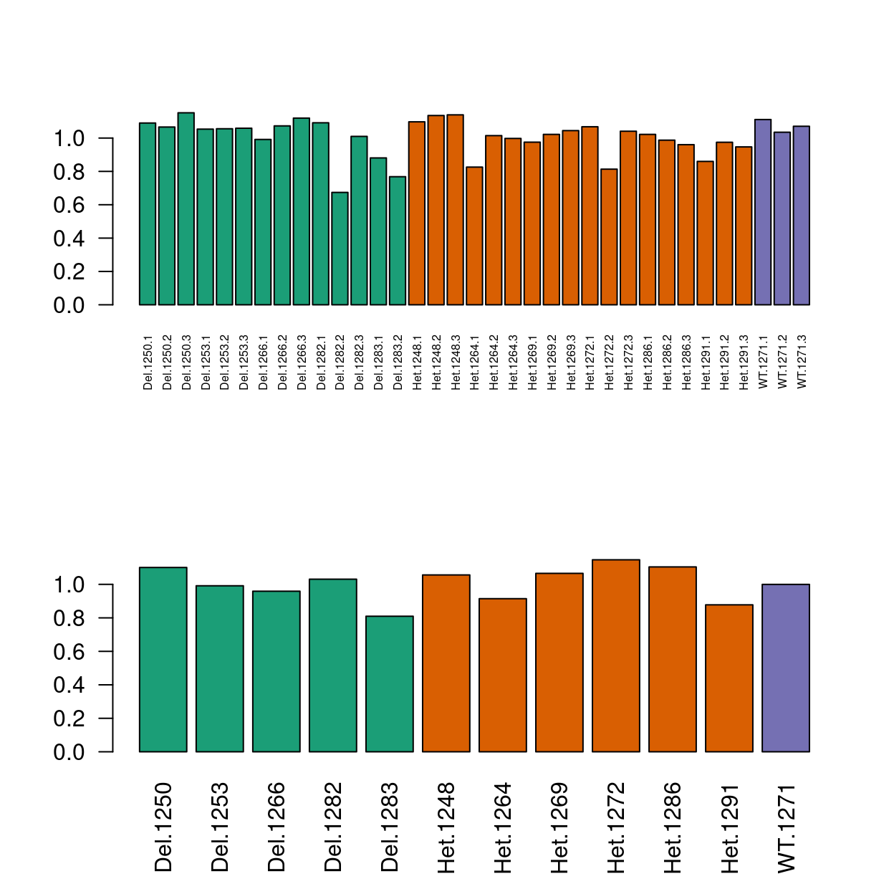
voomLmFit(), so have to re-fit model with edgeR or voomWithQualityWeights()y_X <- y$genes$ENSEMBL.SEQNAME == "X"
Using edgeR
y_index <- list(X = y_X)
y <- estimateDisp(y, design = y_design)
roast(
y,
index = y_index,
design = y_design,
contrast = y_contrasts,
nrot = 9999)
NGenes PropDown PropUp Direction PValue FDR PValue.Mixed
X 479 0.06680585 0.1356994 Up 0.1563 0.1563 0.2839
FDR.Mixed
X 0.2839Using voomWithQualityWeights()
v_y <- voomWithQualityWeights(y, y_design)
roast(
v_y,
index = y_index,
design = y_design,
contrast = y_contrasts,
nrot = 9999)
NGenes PropDown PropUp Direction PValue FDR PValue.Mixed
X 479 0.05845511 0.1231733 Up 0.1537 0.1537 0.3138
FDR.Mixed
X 0.3138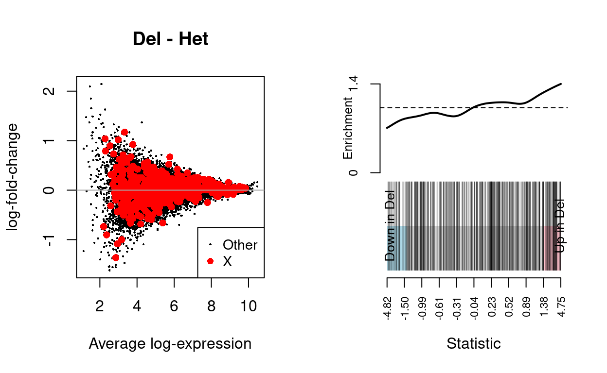
ym_mds <- plotMDS(ym, plot = FALSE)
ym_df <- cbind(data.frame(x = ym_mds$x, y = ym_mds$y), ym$samples)
rownames(ym_df) <- colnames(ym)
p1 <- ggplot(
aes(x = x, y = y, colour = smchd1_genotype_updated, label = rownames(ym_df)),
data = ym_df) +
geom_point() +
geom_text_repel(size = 4) +
theme_cowplot(font_size = 8) +
xlab("Leading logFC dim 1") +
ylab("Leading logFC dim 2") +
scale_colour_manual(values = smchd1_genotype_updated_colours)
p2 <- ggplot(
aes(x = x, y = y, colour = sex, label = rownames(ym_df)),
data = ym_df) +
geom_point() +
geom_text_repel(size = 4) +
theme_cowplot(font_size = 8) +
xlab("Leading logFC dim 1") +
ylab("Leading logFC dim 2") +
scale_colour_manual(values = sex_colours)
p3 <- ggplot(
aes(x = x, y = y, colour = mouse_number, label = rownames(ym_df)),
data = ym_df) +
geom_point() +
geom_text_repel(size = 4) +
theme_cowplot(font_size = 8) +
xlab("Leading logFC dim 1") +
ylab("Leading logFC dim 2") +
scale_colour_manual(values = mouse_number_colours)
p4 <- ggplot(
aes(x = x, y = y, colour = log10(lib.size), label = rownames(ym_df)),
data = ym_df) +
geom_point() +
geom_text_repel(size = 4) +
theme_cowplot(font_size = 8) +
scale_colour_viridis_c() +
xlab("Leading logFC dim 1") +
ylab("Leading logFC dim 2")
p5 <- ggplot(
aes(x = log10(lib.size), y = x, colour = log10(lib.size), label = rownames(ym_df)),
data = ym_df) +
geom_point() +
geom_text_repel(size = 4) +
theme_cowplot(font_size = 8) +
scale_colour_viridis_c() +
ylab("Leading logFC dim 1")
p6 <- ggplot(
aes(x = log10(lib.size), y = y, colour = log10(lib.size), label = rownames(ym_df)),
data = ym_df) +
geom_point() +
geom_text_repel(size = 4) +
theme_cowplot(font_size = 8) +
scale_colour_viridis_c() +
ylab("Leading logFC dim 2")
p1 + p2 + p3 + p4 + p5 + p6 + plot_layout(ncol = 2)
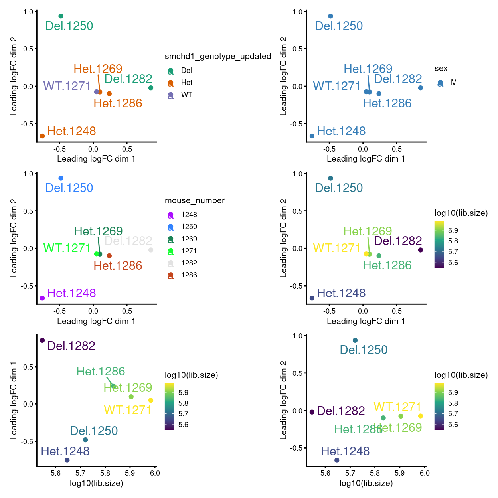
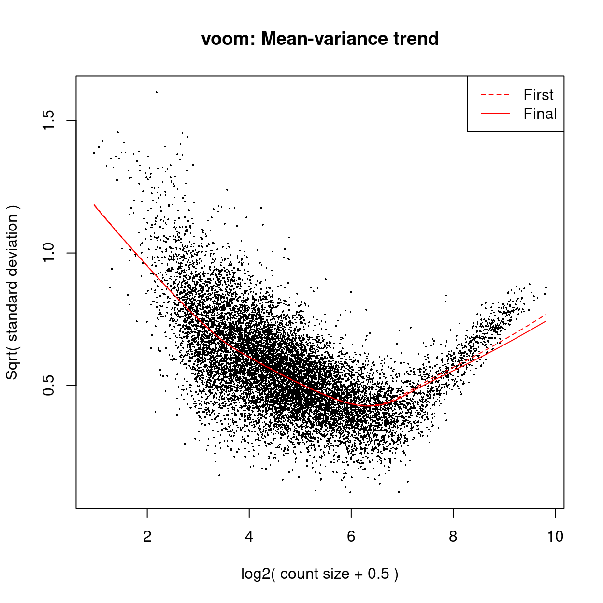
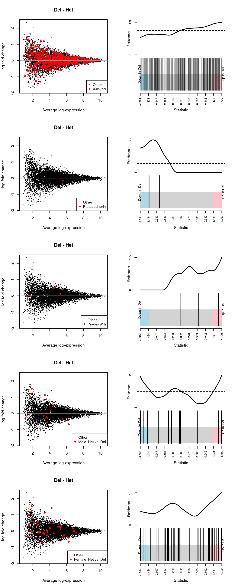
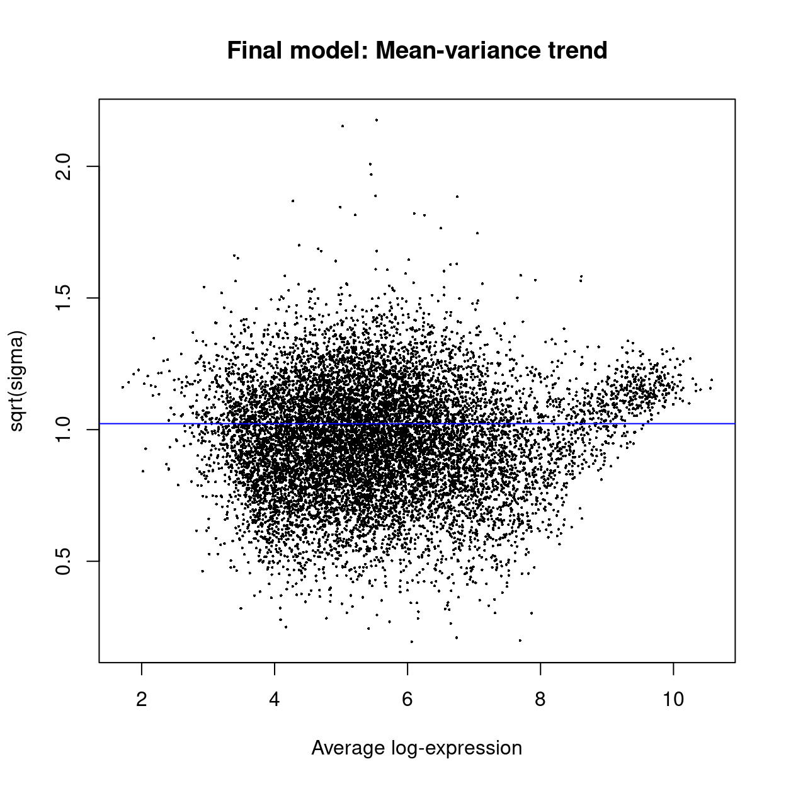
topTable(ym_fit)
ENSEMBL.GENEBIOTYPE ENSEMBL.GENENAME
Vwf protein_coding Vwf
Mt1 protein_coding Mt1
Tomm5 protein_coding Tomm5
ENSMUSG00000110545.1
Raly protein_coding Raly
C130026I21Rik protein_coding C130026I21Rik
Exosc7 protein_coding Exosc7
Itsn1 protein_coding Itsn1
2410127L17Rik protein_coding 2410127L17Rik
Ppa1 protein_coding Ppa1
ENSEMBL.GENESEQSTART ENSEMBL.GENESEQEND
Vwf 125546774 125686679
Mt1 94179089 94180325
Tomm5 45105208 45108114
ENSMUSG00000110545.1
Raly 154791096 154867261
C130026I21Rik 84992690 85270566
Exosc7 123113215 123136129
Itsn1 91729281 91920597
2410127L17Rik 18670780 18704788
Ppa1 61648552 61674168
ENSEMBL.SEQNAME ENSEMBL.SYMBOL
Vwf 6 Vwf
Mt1 8 Mt1
Tomm5 4 Tomm5
ENSMUSG00000110545.1
Raly 2 Raly
C130026I21Rik 1 C130026I21Rik
Exosc7 9 Exosc7
Itsn1 16 Itsn1
2410127L17Rik 19 2410127L17Rik
Ppa1 10 Ppa1
ENSEMBL.GENEID
Vwf ENSMUSG00000001930.17
Mt1 ENSMUSG00000031765.8
Tomm5 ENSMUSG00000078713.8
ENSMUSG00000110545.1 ENSMUSG00000110545.1
Raly ENSMUSG00000027593.15
C130026I21Rik ENSMUSG00000052477.15
Exosc7 ENSMUSG00000025785.5
Itsn1 ENSMUSG00000022957.20
2410127L17Rik ENSMUSG00000024726.10
Ppa1 ENSMUSG00000020089.8
NCBI.ALIAS
Vwf 6820430P06Rik; AI551257; B130011O06Rik; C630030D09; F8VWF; VWD; Vwf
Mt1 MT-; MT-I; Mt-1; Mt1
Tomm5 1110019J04Rik; Tom5; Tomm5
ENSMUSG00000110545.1 NA
Raly AI663842; Mer; Merc; Raly
C130026I21Rik 4930565N07Rik; C130026I21Rik
Exosc7 2610002K22Rik; AV212732; mKIAA0116; Exosc7
Itsn1 AA517634; AA545208; AI316805; AI839402; AI848451; EHSH; Ehsh1; Ese; Ese1; Itsn; Sh3p; Sh3p17; Itsn1
2410127L17Rik 2410127L17Rik; Carnmt1
Ppa1 2010317E03Rik; P; Pyp; Ppa1
NCBI.ENTREZID
Vwf 22371
Mt1 17748
Tomm5 68512
ENSMUSG00000110545.1 NA
Raly 19383
C130026I21Rik 620078
Exosc7 66446
Itsn1 16443
2410127L17Rik 67383
Ppa1 67895
NCBI.GENENAME
Vwf Von Willebrand factor
Mt1 metallothionein 1
Tomm5 translocase of outer mitochondrial membrane 5
ENSMUSG00000110545.1 NA
Raly hnRNP-associated with lethal yellow
C130026I21Rik RIKEN cDNA C130026I21 gene
Exosc7 exosome component 7
Itsn1 intersectin 1 (SH3 domain protein 1A)
2410127L17Rik carnosine N-methyltransferase 1
Ppa1 pyrophosphatase (inorganic) 1
NCBI.REFSEQ
Vwf NM_011708; NP_035838; XM_006505918; XP_006505981
Mt1 NM_013602; NP_038630; XM_006530752; XP_006530815
Tomm5 NM_001099675; NM_001134646; NP_001093145; NP_001128118
ENSMUSG00000110545.1 NA
Raly NM_001139511; NM_001139512; NM_001139513; NM_023130; NP_001132983; NP_001132984; NP_001132985; NP_075619; XM_006499013; XM_006499014; XM_006499015; XM_006499016; XM_017316631; XM_030248812; XP_006499076; XP_006499077; XP_006499078; XP_006499079; XP_017172120; XP_030104672
C130026I21Rik NM_001037909; NM_175219; NP_001032998; NP_780428; XM_006496512; XM_006496519; XM_017321879; XM_017321880; XM_017321881; XM_017321882; XM_017321884; XM_017321885; XM_030255713; XM_030255714; XM_030255715; XM_030255716; XP_006496575; XP_006496582; XP_017177368; XP_017177369; XP_017177370; XP_017177371; XP_017177373; XP_017177374; XP_030111573; XP_030111574; XP_030111575; XP_030111576
Exosc7 NM_001081188; NP_001074657; XM_006512207; XM_006512208; XP_006512270; XP_006512271
Itsn1 NM_001110275; NM_001110276; NM_010587; NP_001103745; NP_001103746; NP_034717; XM_006522931; XM_006522932; XM_006522933; XM_006522934; XM_006522935; XM_006522936; XM_006522937; XM_006522938; XM_006522939; XM_006522940; XM_011246102; XP_006522994; XP_006522995; XP_006522996; XP_006522997; XP_006522998; XP_006522999; XP_006523000; XP_006523001; XP_006523002; XP_006523003; XP_011244404; XR_001781793
2410127L17Rik NM_001377051; NM_001377052; NM_001377053; NM_001377054; NM_001377055; NM_026120; NP_001363980; NP_001363981; NP_001363982; NP_001363983; NP_001363984; NP_080396
Ppa1 NM_026438; NP_080714
NCBI.SYMBOL logFC AveExpr t
Vwf Vwf 0.7830732 6.669085 4.193919
Mt1 Mt1 1.1996610 5.540134 4.569711
Tomm5 Tomm5 0.9160497 5.972748 4.046089
ENSMUSG00000110545.1 NA 0.6204894 6.992148 3.508461
Raly Raly 0.6546613 6.422241 3.310718
C130026I21Rik C130026I21Rik 1.6779829 4.355898 4.480431
Exosc7 Exosc7 0.6842820 6.300297 3.258117
Itsn1 Itsn1 -0.6079125 7.208472 -3.051230
2410127L17Rik Carnmt1 0.8598529 5.699336 3.369329
Ppa1 Ppa1 0.5316434 6.826668 2.945792
P.Value adj.P.Val B
Vwf 2.748556e-05 0.10600264 0.06649456
Mt1 4.900774e-06 0.04323137 -0.57273519
Tomm5 5.219313e-05 0.15096862 -0.96707722
ENSMUSG00000110545.1 4.512771e-04 0.65265956 -1.33363449
Raly 9.315193e-04 0.81122129 -1.97533432
C130026I21Rik 7.473011e-06 0.04323137 -2.18303874
Exosc7 1.122620e-03 0.81122129 -2.19728894
Itsn1 2.280780e-03 0.99153684 -2.44345100
2410127L17Rik 7.543355e-04 0.81122129 -2.46271228
Ppa1 3.223429e-03 0.99153684 -2.46308035topTable(ym_fit, n = Inf)["Smchd1", ]
ENSEMBL.GENEBIOTYPE ENSEMBL.GENENAME ENSEMBL.GENESEQSTART
Smchd1 protein_coding Smchd1 71344489
ENSEMBL.GENESEQEND ENSEMBL.SEQNAME ENSEMBL.SYMBOL
Smchd1 71475343 17 Smchd1
ENSEMBL.GENEID
Smchd1 ENSMUSG00000024054.14
NCBI.ALIAS
Smchd1 4931400A14Rik; AW554188; MommeD; MommeD1; mKIAA0650; Smchd1
NCBI.ENTREZID NCBI.GENENAME
Smchd1 74355 SMC hinge domain containing 1
NCBI.REFSEQ NCBI.SYMBOL
Smchd1 NM_028887; NP_083163; XM_030250119; XP_030105979 Smchd1
logFC AveExpr t P.Value adj.P.Val B
Smchd1 -0.3436645 6.375116 -1.514327 0.129952 0.9915368 -4.371277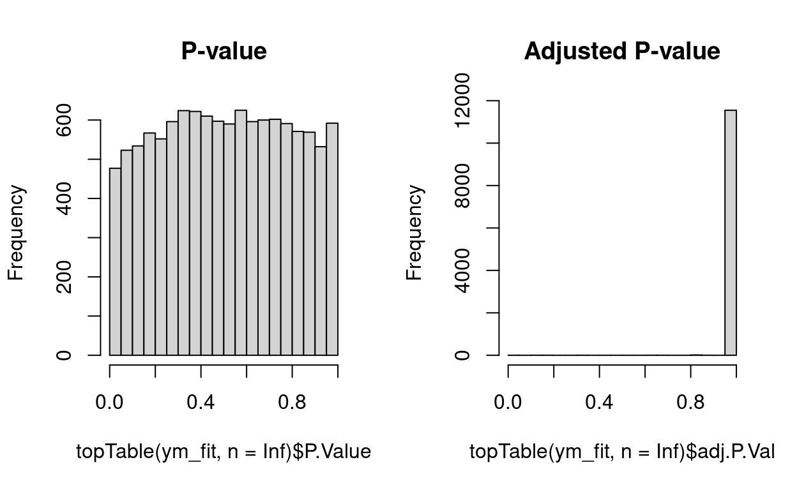
ym_X <- ym$genes$ENSEMBL.SEQNAME == "X"
Using edgeR
ym_index <- list(X = ym_X)
ym <- estimateDisp(ym, design = ym_design)
roast(
ym,
index = ym_index,
design = ym_design,
contrast = ym_contrasts,
nrot = 9999)
NGenes PropDown PropUp Direction PValue FDR PValue.Mixed
X 429 0.06293706 0.06526807 Up 0.9847 0.9847 0.7422
FDR.Mixed
X 0.7422Using voomWithQualityWeights()
v_ym <- voomWithQualityWeights(ym, ym_design)
roast(
v_ym,
index = ym_index,
design = ym_design,
contrast = ym_contrasts,
nrot = 9999)
NGenes PropDown PropUp Direction PValue FDR PValue.Mixed
X 429 0.04895105 0.07692308 Down 0.9927 0.9927 0.5589
FDR.Mixed
X 0.5589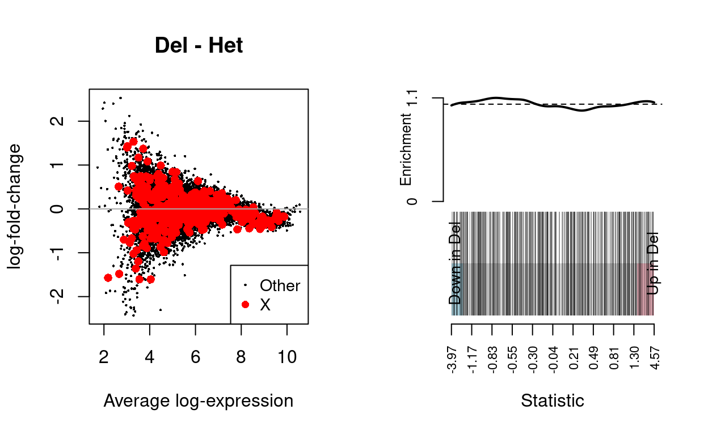
yf_mds <- plotMDS(yf, plot = FALSE)
yf_df <- cbind(data.frame(x = yf_mds$x, y = yf_mds$y), yf$samples)
rownames(yf_df) <- colnames(yf)
p1 <- ggplot(
aes(x = x, y = y, colour = smchd1_genotype_updated, label = rownames(yf_df)),
data = yf_df) +
geom_point() +
geom_text_repel(size = 4) +
theme_cowplot(font_size = 8) +
xlab("Leading logFC dim 1") +
ylab("Leading logFC dim 2") +
scale_colour_manual(values = smchd1_genotype_updated_colours)
p2 <- ggplot(
aes(x = x, y = y, colour = sex, label = rownames(yf_df)),
data = yf_df) +
geom_point() +
geom_text_repel(size = 4) +
theme_cowplot(font_size = 8) +
xlab("Leading logFC dim 1") +
ylab("Leading logFC dim 2") +
scale_colour_manual(values = sex_colours)
p3 <- ggplot(
aes(x = x, y = y, colour = mouse_number, label = rownames(yf_df)),
data = yf_df) +
geom_point() +
geom_text_repel(size = 4) +
theme_cowplot(font_size = 8) +
xlab("Leading logFC dim 1") +
ylab("Leading logFC dim 2") +
scale_colour_manual(values = mouse_number_colours)
p4 <- ggplot(
aes(x = x, y = y, colour = log10(lib.size), label = rownames(yf_df)),
data = yf_df) +
geom_point() +
geom_text_repel(size = 4) +
theme_cowplot(font_size = 8) +
scale_colour_viridis_c() +
xlab("Leading logFC dim 1") +
ylab("Leading logFC dim 2")
p5 <- ggplot(
aes(x = log10(lib.size), y = x, colour = log10(lib.size), label = rownames(yf_df)),
data = yf_df) +
geom_point() +
geom_text_repel(size = 4) +
theme_cowplot(font_size = 8) +
scale_colour_viridis_c() +
ylab("Leading logFC dim 1")
p6 <- ggplot(
aes(x = log10(lib.size), y = y, colour = log10(lib.size), label = rownames(yf_df)),
data = yf_df) +
geom_point() +
geom_text_repel(size = 4) +
theme_cowplot(font_size = 8) +
scale_colour_viridis_c() +
ylab("Leading logFC dim 2")
p1 + p2 + p3 + p4 + p5 + p6 + plot_layout(ncol = 2)
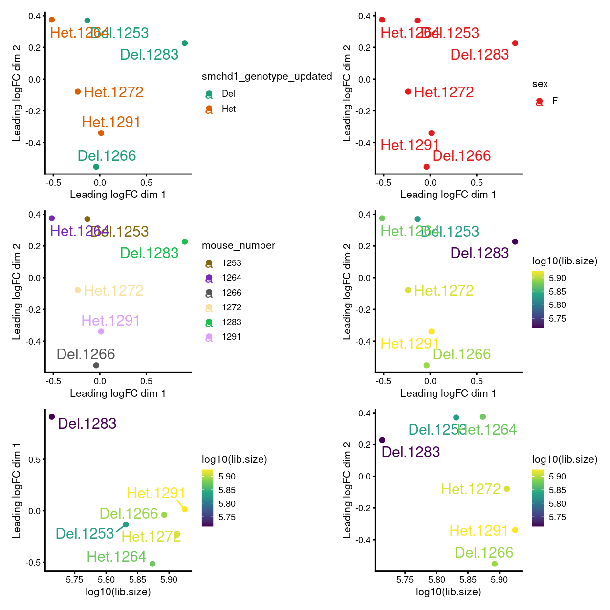
yf_o <- order(colnames(yf))
yf_design <- model.matrix(~0 + smchd1_genotype_updated, yf$samples)
# NOTE: Drop WT column as there are no female WT samples.
yf_design <- yf_design[, colSums(yf_design) > 0]
colnames(yf_design) <- sub("smchd1_genotype_updated", "", colnames(yf_design))
yf_fit <- voomLmFit(
yf,
design = yf_design,
sample.weights = TRUE,
plot = TRUE)
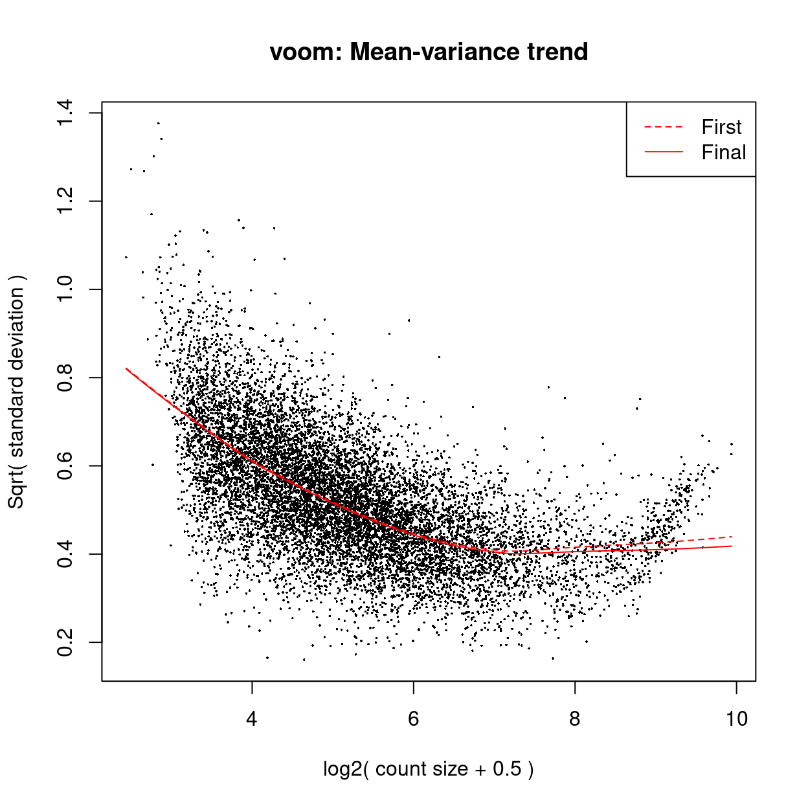
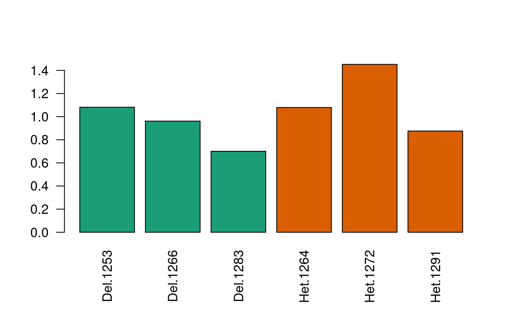
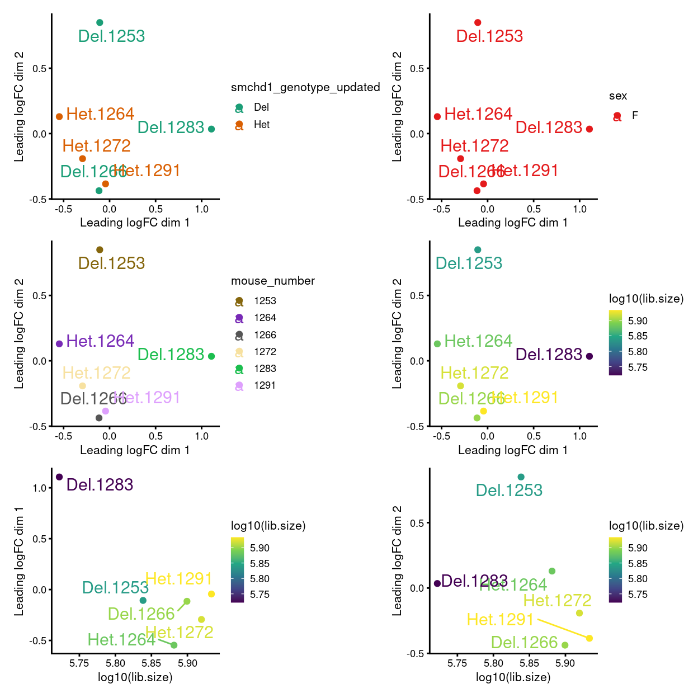
topTable(yf_fit)
ENSEMBL.GENEBIOTYPE ENSEMBL.GENENAME ENSEMBL.GENESEQSTART
Smchd1 protein_coding Smchd1 71344489
Hist1h2ab protein_coding Hist1h2ab 23751126
Rpl30-ps1 processed_pseudogene Rpl30-ps1 38376807
Gm15013 protein_coding Gm15013 139713681
Snhg3 processed_transcript Snhg3 132348014
Hist1h2ah protein_coding Hist1h2ah 22035164
Gvin1 protein_coding Gvin1 106156556
Gm19503 processed_pseudogene Gm19503 151520447
Gm17257 processed_pseudogene Gm17257 80507787
Gm8203 processed_pseudogene Gm8203 116173737
ENSEMBL.GENESEQEND ENSEMBL.SEQNAME ENSEMBL.SYMBOL
Smchd1 71475343 17 Smchd1
Hist1h2ab 23751598 13 Hist1h2ab
Rpl30-ps1 38377154 6 Rpl30-ps1
Gm15013 139714481 X Gm15013
Snhg3 132353686 4 Snhg3
Hist1h2ah 22035568 13 Hist1h2ah
Gvin1 106215326 7 Gvin1
Gm19503 151520687 1 Gm19503
Gm17257 80508254 7 Gm17257
Gm8203 116174123 6 Gm8203
ENSEMBL.GENEID
Smchd1 ENSMUSG00000024054.14
Hist1h2ab ENSMUSG00000061615.2
Rpl30-ps1 ENSMUSG00000057696.4
Gm15013 ENSMUSG00000098559.1
Snhg3 ENSMUSG00000085241.7
Hist1h2ah ENSMUSG00000069302.5
Gvin1 ENSMUSG00000045868.12
Gm19503 ENSMUSG00000100551.1
Gm17257 ENSMUSG00000091989.1
Gm8203 ENSMUSG00000101878.1
NCBI.ALIAS
Smchd1 4931400A14Rik; AW554188; MommeD; MommeD1; mKIAA0650; Smchd1
Hist1h2ab H2A.; H2A.1; H2a-5; H2a-53; Hist1h; Hist1h2ab; H2ac4
Rpl30-ps1 NA
Gm15013 EG546380; Gm15013
Snhg3 Rnu1; Rnu17d; U17HG; Snhg3
Hist1h2ah Hist1h; Hist1h2ah; H2ac12
Gvin1 9130002C22Rik; 9830104F22Rik; Ii; Iigs1; V; VLI; VLIG; VLIG-1; Gvin1
Gm19503 NA
Gm17257 Gm17257; Ndufab1-ps
Gm8203 NA
NCBI.ENTREZID NCBI.GENENAME
Smchd1 74355 SMC hinge domain containing 1
Hist1h2ab 319172 H2A clustered histone 4
Rpl30-ps1 NA NA
Gm15013 100417274 ribosomal protein S4, X-linked pseudogene
Snhg3 399101 small nucleolar RNA host gene 3
Hist1h2ah 319168 H2A clustered histone 12
Gvin1 74558 GTPase, very large interferon inducible 1
Gm19503 NA NA
Gm17257 102634451 NADH:ubiquinone oxidoreductase subunit AB1b
Gm8203 NA NA
NCBI.REFSEQ
Smchd1 NM_028887; NP_083163; XM_030250119; XP_030105979
Hist1h2ab NM_175660; NP_783591
Rpl30-ps1 NA
Gm15013 NA
Snhg3 NR_002904; NR_003270
Hist1h2ah NM_175659; NP_783590
Gvin1 NM_001039160; NM_029000; NP_001034249; NP_083276; XM_017312356; XP_017167845
Gm19503 NA
Gm17257 NA
Gm8203 NA
NCBI.SYMBOL logFC AveExpr t P.Value
Smchd1 Smchd1 -0.9196499 6.196570 -4.564649 0.0000527059
Hist1h2ab H2ac4 0.7377339 6.913170 4.248432 0.0001374156
Rpl30-ps1 NA 0.5558097 7.539098 4.034760 0.0002598973
Gm15013 Gm15013 0.7107823 6.271358 4.068861 0.0002349120
Snhg3 Snhg3 0.7966257 5.923613 4.117325 0.0002033935
Hist1h2ah H2ac12 0.6396590 6.780925 3.879541 0.0004103490
Gvin1 Gvin1 -0.5816545 7.030119 -3.841977 0.0004579094
Gm19503 NA 0.8542704 6.124652 3.927357 0.0003567075
Gm17257 Ndufab1-ps 0.6848889 6.422459 3.817741 0.0004913891
Gm8203 NA 0.5199310 7.740226 3.680889 0.0007298130
adj.P.Val B
Smchd1 0.4789468 0.6899730
Hist1h2ab 0.4789468 0.5349589
Rpl30-ps1 0.4789468 0.1758529
Gm15013 0.4789468 -0.1197237
Snhg3 0.4789468 -0.2319699
Hist1h2ah 0.4789468 -0.3184473
Gvin1 0.4789468 -0.3651386
Gm19503 0.4789468 -0.4837861
Gm17257 0.4789468 -0.5557962
Gm8203 0.5661315 -0.6183900topTable(yf_fit, n = Inf)["Smchd1", ]
ENSEMBL.GENEBIOTYPE ENSEMBL.GENENAME ENSEMBL.GENESEQSTART
Smchd1 protein_coding Smchd1 71344489
ENSEMBL.GENESEQEND ENSEMBL.SEQNAME ENSEMBL.SYMBOL
Smchd1 71475343 17 Smchd1
ENSEMBL.GENEID
Smchd1 ENSMUSG00000024054.14
NCBI.ALIAS
Smchd1 4931400A14Rik; AW554188; MommeD; MommeD1; mKIAA0650; Smchd1
NCBI.ENTREZID NCBI.GENENAME
Smchd1 74355 SMC hinge domain containing 1
NCBI.REFSEQ NCBI.SYMBOL
Smchd1 NM_028887; NP_083163; XM_030250119; XP_030105979 Smchd1
logFC AveExpr t P.Value adj.P.Val B
Smchd1 -0.9196499 6.19657 -4.564649 5.27059e-05 0.4789468 0.689973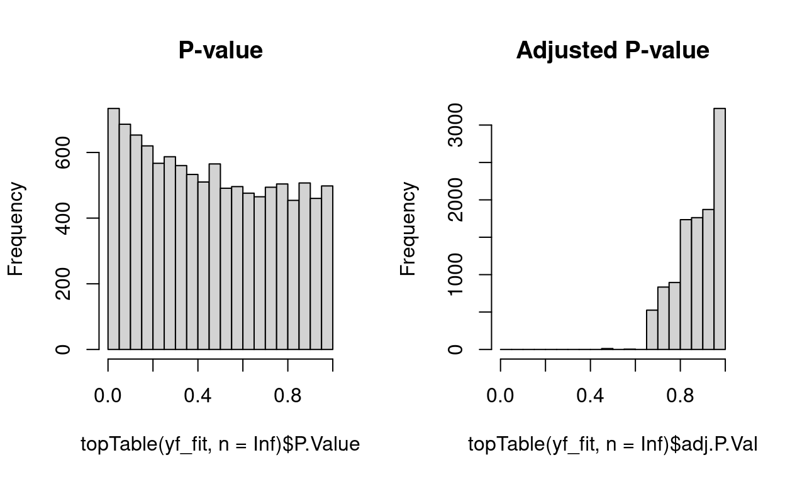
yf_X <- yf$genes$ENSEMBL.SEQNAME == "X"
Using edgeR
yf_index <- list(X = yf_X)
yf <- estimateDisp(yf, design = yf_design)
roast(
yf,
index = yf_index,
design = yf_design,
contrast = yf_contrasts,
nrot = 9999)
NGenes PropDown PropUp Direction PValue FDR PValue.Mixed
X 396 0.06565657 0.1691919 Up 0.0731 0.0731 0.1363
FDR.Mixed
X 0.1363Using voomWithQualityWeights()
v_yf <- voomWithQualityWeights(yf, yf_design)
roast(
v_yf,
index = yf_index,
design = yf_design,
contrast = yf_contrasts,
nrot = 9999)
NGenes PropDown PropUp Direction PValue FDR PValue.Mixed
X 396 0.05808081 0.1792929 Up 0.0746 0.0746 0.0989
FDR.Mixed
X 0.0989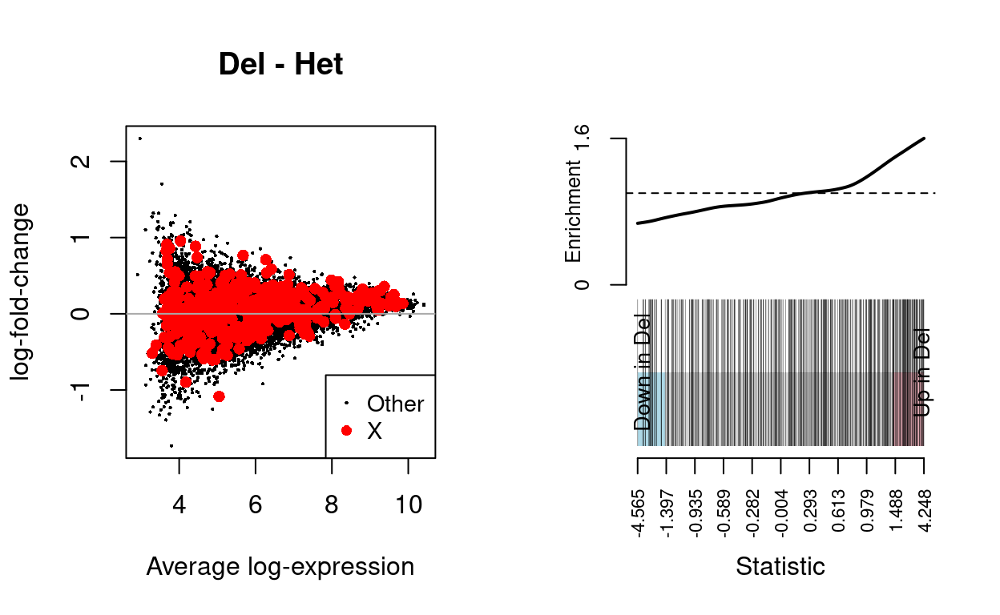
x and ysessioninfo::session_info()
─ Session info ─────────────────────────────────────────────────────
setting value
version R version 4.0.3 (2020-10-10)
os CentOS Linux 7 (Core)
system x86_64, linux-gnu
ui X11
language (EN)
collate en_US.UTF-8
ctype en_US.UTF-8
tz Australia/Melbourne
date 2021-03-31
─ Packages ─────────────────────────────────────────────────────────
! package * version date lib source
P assertthat 0.2.1 2019-03-21 [?] CRAN (R 4.0.0)
P Biobase * 2.50.0 2020-10-27 [?] Bioconductor
P BiocGenerics * 0.36.0 2020-10-27 [?] Bioconductor
P bitops 1.0-6 2013-08-17 [?] CRAN (R 4.0.0)
P cli 2.3.1 2021-02-23 [?] CRAN (R 4.0.3)
P colorspace 2.0-0 2020-11-11 [?] CRAN (R 4.0.3)
P cowplot * 1.1.1 2020-12-30 [?] CRAN (R 4.0.3)
P crayon 1.4.1 2021-02-08 [?] CRAN (R 4.0.3)
P DBI 1.1.1 2021-01-15 [?] CRAN (R 4.0.3)
P DelayedArray 0.16.1 2021-01-22 [?] Bioconductor
P digest 0.6.27 2020-10-24 [?] CRAN (R 4.0.2)
P distill 1.2 2021-01-13 [?] CRAN (R 4.0.3)
P downlit 0.2.1 2020-11-04 [?] CRAN (R 4.0.3)
P dplyr 1.0.4 2021-02-02 [?] CRAN (R 4.0.3)
P edgeR * 3.32.1 2021-01-14 [?] Bioconductor
P ellipsis 0.3.1 2020-05-15 [?] CRAN (R 4.0.0)
P evaluate 0.14 2019-05-28 [?] CRAN (R 4.0.0)
P fansi 0.4.2 2021-01-15 [?] CRAN (R 4.0.3)
P farver 2.0.3 2020-01-16 [?] CRAN (R 4.0.0)
P generics 0.1.0 2020-10-31 [?] CRAN (R 4.0.3)
P GenomeInfoDb * 1.26.2 2020-12-08 [?] Bioconductor
P GenomeInfoDbData 1.2.4 2020-10-20 [?] Bioconductor
P GenomicRanges * 1.42.0 2020-10-27 [?] Bioconductor
P ggplot2 * 3.3.3 2020-12-30 [?] CRAN (R 4.0.3)
P ggrepel * 0.9.1 2021-01-15 [?] CRAN (R 4.0.3)
P glue 1.4.2 2020-08-27 [?] CRAN (R 4.0.0)
P gtable 0.3.0 2019-03-25 [?] CRAN (R 4.0.0)
P here * 1.0.1 2020-12-13 [?] CRAN (R 4.0.3)
P highr 0.8 2019-03-20 [?] CRAN (R 4.0.0)
P htmltools 0.5.1.1 2021-01-22 [?] CRAN (R 4.0.3)
P IRanges * 2.24.1 2020-12-12 [?] Bioconductor
P knitr 1.31 2021-01-27 [?] CRAN (R 4.0.3)
P labeling 0.4.2 2020-10-20 [?] CRAN (R 4.0.0)
P lattice 0.20-41 2020-04-02 [3] CRAN (R 4.0.3)
P lifecycle 1.0.0 2021-02-15 [?] CRAN (R 4.0.3)
P limma * 3.46.0 2020-10-27 [?] Bioconductor
P locfit 1.5-9.4 2020-03-25 [?] CRAN (R 4.0.0)
P magrittr 2.0.1 2020-11-17 [?] CRAN (R 4.0.3)
P Matrix 1.2-18 2019-11-27 [3] CRAN (R 4.0.3)
P MatrixGenerics * 1.2.1 2021-01-30 [?] Bioconductor
P matrixStats * 0.58.0 2021-01-29 [?] CRAN (R 4.0.3)
P munsell 0.5.0 2018-06-12 [?] CRAN (R 4.0.0)
P patchwork * 1.1.1 2020-12-17 [?] CRAN (R 4.0.3)
P pillar 1.5.0 2021-02-22 [?] CRAN (R 4.0.3)
P pkgconfig 2.0.3 2019-09-22 [?] CRAN (R 4.0.0)
P purrr 0.3.4 2020-04-17 [?] CRAN (R 4.0.0)
P R6 2.5.0 2020-10-28 [?] CRAN (R 4.0.2)
P Rcpp 1.0.6 2021-01-15 [?] CRAN (R 4.0.3)
P RCurl 1.98-1.2 2020-04-18 [?] CRAN (R 4.0.0)
P rlang 0.4.10 2020-12-30 [?] CRAN (R 4.0.3)
P rmarkdown 2.7 2021-02-19 [?] CRAN (R 4.0.3)
P rprojroot 2.0.2 2020-11-15 [?] CRAN (R 4.0.3)
P S4Vectors * 0.28.1 2020-12-09 [?] Bioconductor
P scales 1.1.1 2020-05-11 [?] CRAN (R 4.0.0)
P sessioninfo 1.1.1 2018-11-05 [?] CRAN (R 4.0.0)
P SingleCellExperiment * 1.12.0 2020-10-27 [?] Bioconductor
P statmod 1.4.35 2020-10-19 [?] CRAN (R 4.0.2)
P stringi 1.5.3 2020-09-09 [?] CRAN (R 4.0.0)
P stringr 1.4.0 2019-02-10 [?] CRAN (R 4.0.0)
P SummarizedExperiment * 1.20.0 2020-10-27 [?] Bioconductor
P tibble 3.0.6 2021-01-29 [?] CRAN (R 4.0.3)
P tidyselect 1.1.0 2020-05-11 [?] CRAN (R 4.0.0)
P utf8 1.1.4 2018-05-24 [?] CRAN (R 4.0.0)
P vctrs 0.3.6 2020-12-17 [?] CRAN (R 4.0.3)
P viridisLite 0.3.0 2018-02-01 [?] CRAN (R 4.0.0)
P withr 2.4.1 2021-01-26 [?] CRAN (R 4.0.3)
P xfun 0.21 2021-02-10 [?] CRAN (R 4.0.3)
P XVector 0.30.0 2020-10-27 [?] Bioconductor
P yaml 2.2.1 2020-02-01 [?] CRAN (R 4.0.0)
P zlibbioc 1.36.0 2020-10-27 [?] Bioconductor
[1] /stornext/Projects/score/Analyses/C086_Kinkel/renv/library/R-4.0/x86_64-pc-linux-gnu
[2] /tmp/RtmpuiV8yk/renv-system-library
[3] /stornext/System/data/apps/R/R-4.0.3/lib64/R/library
P ── Loaded and on-disk path mismatch.